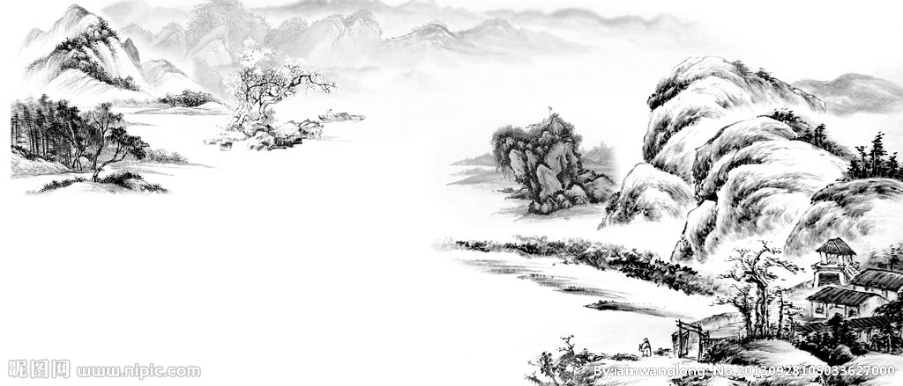

首页
国画
书法
剪纸
音乐
视频

国画，又称“中国画”，古时称为丹青，我国传统绘画（区别于“西洋画”）。主要指以毛笔、墨、国画颜料等画在绢、宣纸、帛上并加以装裱的卷轴画。题材可分人物、山水、花鸟等，技法可分工笔和写意，它的精神内核是“笔墨”。
国画强调“外师造化，中得心源”，要求“意存笔先，画尽意在”，强调融化物我，创制意境，达到以形写神，形神兼备，气韵生动。其重神似不重形似，重意境不重场景的一种画。
中国画，按绘画技法分类： 写实国画、写意国画、工笔画、抽象国画、内画等。